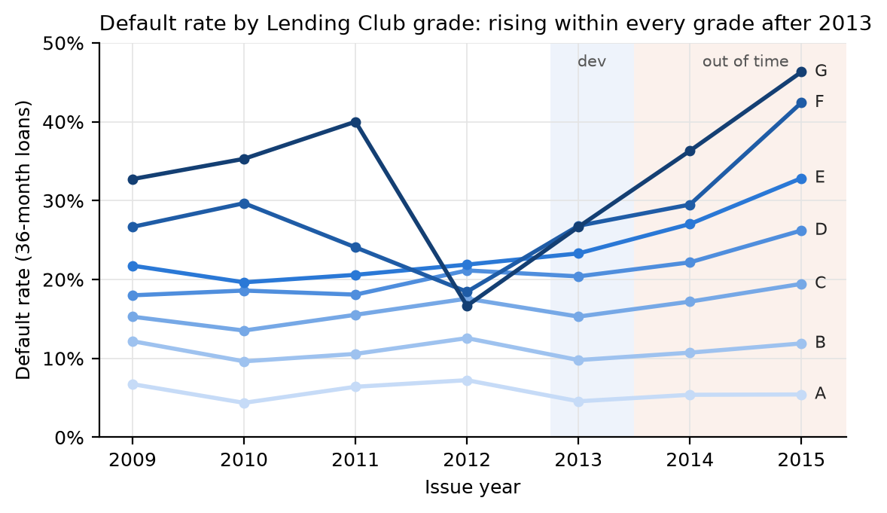
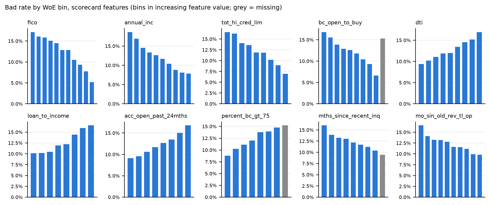
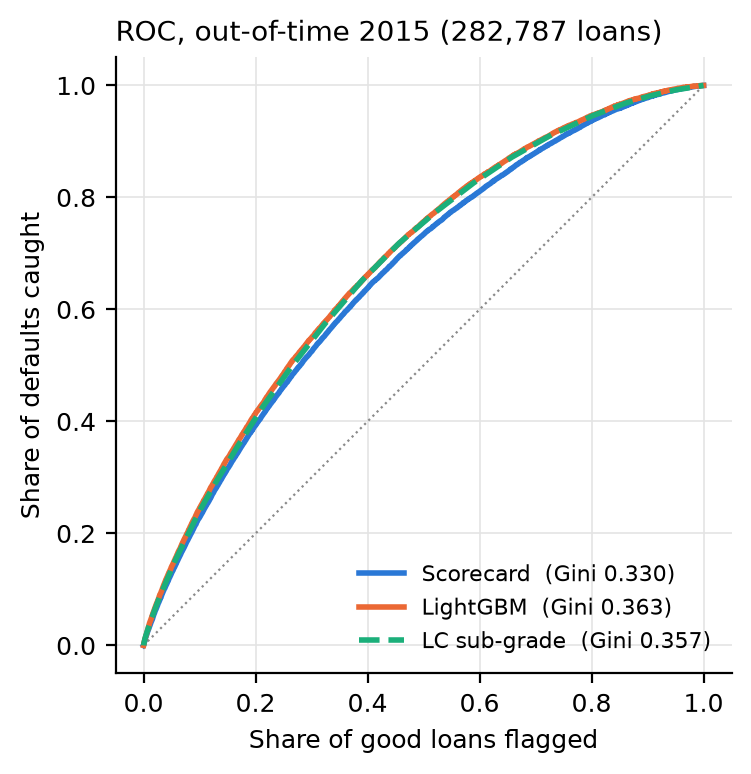
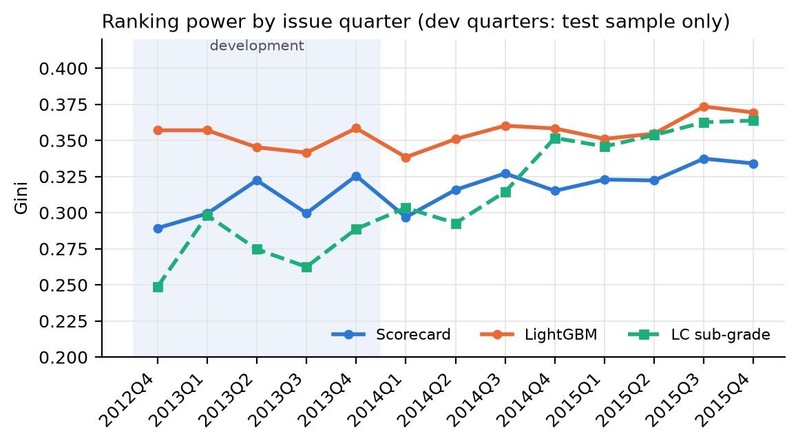
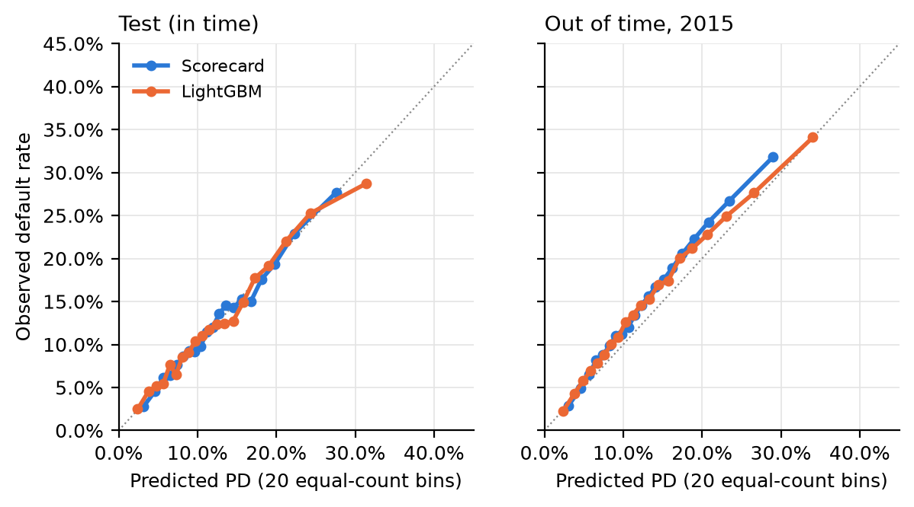
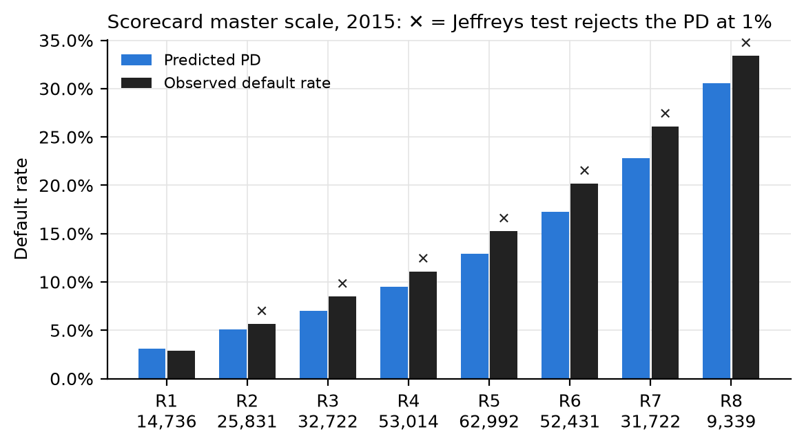
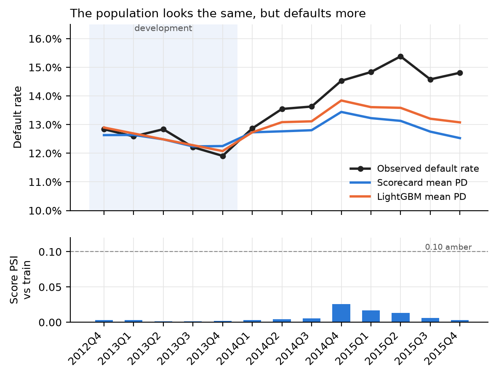

| Item | Detail |
|---|---|
| Model | LC-PD-01: lifetime probability of default, unsecured 36-month consumer instalment loans |
| Model type | Champion: WoE logistic scorecard. Challenger: gradient-boosted trees (LightGBM) |
| Intended uses | Application decisioning (cut-off), risk-based pricing input, expected loss, portfolio stress |
| Data | Lending Club accepted loans 2007–2018Q4 (public), 36-month loans issued to Dec 2015 |
| Development sample | Issued Oct 2012 – Dec 2013: 115,603 loans, 12.4% default rate |
| Out-of-time samples | 2014 (162,570 loans) and 2015 (282,787 loans) |
| Code | credit-risk/ repository, package lcrisk; lcrisk reproduce rebuilds every number and figure here from the raw file |
| Review status | The author built and reviewed the model. This report follows the structure of an independent validation, but it is not independent, and a real deployment would need one. |
The scorecard ranks risk consistently in and out of time: its Gini is 0.310 on the hold-out test sample, 0.316 on 2014 loans and 0.330 on 2015 loans, with no decay. Ten features carry it, all with the expected sign, all significant, with variance inflation factors below 2. On the development window it is well calibrated (Hosmer–Lemeshow p = 0.65; no master-scale grade rejected).
Out of time, calibration fails. Default rates rose inside every Lending Club grade after 2013, and the model under-predicts the 2015 vintage by two percentage points (mean PD 12.9%, observed 14.9%); the Jeffreys test rejects the PD of seven of eight grades. With samples this large the test rejects small misses too, so the size matters more: in 2014 observed defaults ran 5–10% above prediction in the rejected grades, in 2015 9–21%, which is material. The population stability index never left green (score PSI ≤ 0.026 in every quarter), so standard population monitoring would not have caught this. The applicants looked the same on paper and defaulted more often. This was not a macroeconomic downturn: US unemployment fell from 7.4% in 2013 to 5.3% in 2015 (BLS annual averages). The evidence points to drift in Lending Club's own credit supply as it tripled its lending in two years: lighter income verification, and borrowers taking on new accounts that left no enquiry trail. Recalibrating the intercept on 2014 outcomes, as an annual review would have done, closes only a third of the 2015 gap, because the book kept changing.
The LightGBM challenger adds about four Gini points in every sample (0.352 / 0.354 / 0.363). At a 20% decline rate on the 2015 book that is 628 more defaults avoided, roughly $4 million of loss on $3.6 billion lent. Its top decline reason matches the scorecard's only 29% of the time feature by feature, but 75% of the time once overlapping bureau fields are grouped into reason families, so a workable reason-code framework is within reach.
The crisis stress is sensitive to how the crisis is measured. Anchored on Lending Club's sub-grades, a 2007–09 repeat raises 2015 lifetime expected loss from 6.6% to 8.1%; anchored on FICO and debt-to-income, whose meaning did not change over time, to 11.4%. Lending Club graded more harshly in its early years, so the sub-grade anchor understates the crisis.
Fair-lending risk could not be tested: the data hold no protected attributes and no names or full addresses, so neither a direct disparate-impact test nor a proxy method is possible.
Opinion: approve the scorecard as champion, with conditions. (1) Recalibrate before use and on monitoring triggers, not on a fixed annual cycle. (2) Add an early-delinquency backtest to monitoring, because the 36-month outcome arrives too late to steer by. (3) Run a disparate-impact test on the deploying lender's data before use. (4) Plan capital on the FICO-anchored stress, the more severe of the two. (5) Keep LightGBM as challenger until a family-based reason-code framework is approved. The findings log is in Section 10.
| Gini (95% bootstrap interval) | Test (in time) | Out of time 2014 | Out of time 2015 |
|---|---|---|---|
| Scorecard (champion) | 0.310 (0.292–0.326) | 0.316 (0.308–0.324) | 0.330 (0.325–0.335) |
| LightGBM (challenger) | 0.352 (0.338–0.369) | 0.354 (0.345–0.362) | 0.363 (0.359–0.368) |
| Lending Club sub-grade (benchmark) | 0.277 (0.259–0.293) | 0.319 (0.312–0.326) | 0.357 (0.353–0.361) |
The model estimates the probability that a new 36-month unsecured instalment loan to an individual borrower is charged off at any point in its life (lifetime PD). It is built from information available at application only: the credit-bureau record, stated income and employment, the loan request and the debt-to-income ratio.
In scope: individual applications for 36-month loans in the product and credit-policy range of the development data (FICO 660 and above, Lending Club's minimum).
Out of scope: 60-month loans (different default timing; excluded from development), joint applications (239 in the whole 2007–2015 population, too few to model), behavioural scoring of loans already on book, and IFRS 9 / CECL provisioning. That would need a term structure of PD and forward-looking adjustments. Section 7 gives an empirical 12-month PD for the Basel-style calculation only.
The data are Lending Club's public loan-level files, 2007 to 2018Q4, as compiled on Kaggle
(wordsforthewise/lending-club) and fetched from a CC0 mirror. The file is 1,675,133,810
bytes (sha256 3eae03c2…0933d1f36a, recorded in data/SOURCES.md) and contains
2,260,668 loans, which matches the published count. The raw file is never modified; lcrisk
ingest derives everything from it.
| Step | Loans in | Excluded | Loans out |
|---|---|---|---|
| Valid loan id and issue date (drops summary lines) | 2,260,701 | 33 | 2,260,668 |
| 36-month term | 2,260,668 | 650,914 | 1,609,754 |
| Issued on or before December 2015 | 1,609,754 | 988,585 | 621,169 |
| Individual application | 621,169 | 239 | 620,930 |
| Final outcome observed (paid or charged off) | 620,930 | 147 | 620,783 |
The issue-date cut makes every loan old enough to have run its full term before the data snapshot, so every outcome is final. Without it, recent vintages would be biased: their early defaults would be visible, but their full repayments would not yet be. Only 147 loans were still current or late at the snapshot, so the cut is clean.
Default (bad = 1): loan status Charged Off, Default, or the legacy Does not meet the credit policy. Status: Charged Off. Good (bad = 0): Fully Paid and its legacy equivalent. The population default rate is 13.94%.
Features come from an explicit allowlist of fields known at application (ingest.py).
Everything recorded after origination is excluded: payments, recoveries, the last FICO pull,
hardship and settlement flags. Excluding by allowlist, not denylist, means a new post-origination
field added to the source cannot leak in by accident. Three further groups are excluded on
purpose:
Fair lending. Leaving out geography is only half of a fair-lending review. The other half is a disparate-impact test: comparing approval rates at the cut-off across protected groups and searching for a less discriminatory alternative model. That cannot be done on this data. It holds no race, sex or age, and no names or full addresses, so the standard proxy method (Bayesian Improved Surname Geocoding, which combines surname with census geography) is unavailable. A geography-only proxy from three-digit zip codes would be far too coarse to rely on. The champion's ten features are standard bureau and affordability measures. The challenger also uses home ownership and loan purpose, which a fair-lending review would examine. The test has to be run on the deploying lender's own data before use (finding F10).
Five features are derived: credit history length at application, employment length in years, the FICO band midpoint, and two affordability ratios, loan amount and revolving balance to annual income.
Lending Club added sixteen bureau fields (total credit limits, bankcard utilisation and headroom, mortgage accounts, recent account openings) part-way through 2012. They are absent before 2012Q3, 43% populated that quarter, and complete from 2012Q4. Developing on 2007–2013 would have meant either dropping these fields or letting their missingness stand in for the issue date. The development window is therefore 2012Q4–2013Q4, the period a lender would actually redevelop on. The earlier vintages are used only to calibrate the stress scenario (Section 8).

Figure 1. Observed default rate by Lending Club grade and issue year. From 2013 the default rate rises inside every grade, most steeply in the riskiest.
The development window is split at random, stratified on the target, into training (70%, 80,922 loans) and test (30%, 34,681 loans). The 2014 and 2015 vintages are out-of-time samples scored separately. Binning, feature selection, master-scale boundaries and challenger hyperparameters were all fixed before either out-of-time sample was scored.
Binning. Each numeric feature starts from up to ten quantile bins. Adjacent bins are merged until (a) every bin holds at least 5% of the training sample and (b) the default rate moves monotonically across bins. Monotonicity is imposed because a scorecard that rewards a higher debt-to-income ratio over some range is hard to defend to a credit committee, and the reversal is usually noise. Missing values form their own bin when they cover at least 0.5% of the sample, and otherwise score neutral (WoE = 0) rather than inherit a weight set by a handful of loans. Categories under 2% are pooled. WoE is ln(share of goods / share of bads), so positive WoE means lower risk.
Selection. Features need an information value of at least 0.02. Going down the IV ranking,
a feature is dropped if its WoE correlates above 0.6 with one already kept. That leaves
avg_cur_bal, total_bc_limit and tot_cur_bal, among others, behind tot_hi_cred_lim and
bc_open_to_buy. A logistic regression is then fitted, and any feature with a wrong-signed
(positive) coefficient or p > 0.01 is removed one at a time until none remain. None were
removed at this stage.
Scaling. Scores are set to 600 points at good:bad odds of 50:1, with 20 points to double the odds. The intercept is shared equally across features, so each bin carries a whole number of points and the points add up to the score (Appendix A).
| Feature | Coefficient | Std. error | IV | VIF |
|---|---|---|---|---|
| Intercept | −1.959 | 0.011 | ||
| FICO (band midpoint) | −0.539 | 0.040 | 0.124 | 1.57 |
| Annual income | −0.409 | 0.046 | 0.103 | 1.84 |
| Total high credit limit | −0.588 | 0.053 | 0.078 | 1.68 |
| Bankcard open-to-buy | −0.356 | 0.057 | 0.075 | 1.92 |
| Debt-to-income | −0.531 | 0.054 | 0.049 | 1.23 |
| Loan to income | −0.739 | 0.057 | 0.043 | 1.24 |
| Accounts opened, past 24 months | −0.971 | 0.058 | 0.042 | 1.19 |
| % bankcards above 75% utilised | −0.330 | 0.072 | 0.041 | 1.78 |
| Months since most recent enquiry | −0.943 | 0.062 | 0.033 | 1.10 |
| Age of oldest revolving account | −0.281 | 0.064 | 0.032 | 1.15 |
All coefficients are negative, as required under this WoE convention, and all have
|z| > 4. Every feature is a familiar credit-risk driver with an intuitive direction (Figure
7): high FICO, income, credit limits and headroom lower risk; leverage, recent credit-seeking
and thin or young files raise it. Two missing-value bins are economically meaningful and kept:
no bankcard at all (bc_open_to_buy missing, 15.3% default rate) is high risk, and no
enquiry on file (mths_since_recent_inq missing, 9.4%) is the lowest-risk group of that
feature.

Figure 7. Training default rate by bin for each scorecard feature, bins in increasing feature value; grey bars are missing-value bins.
Master scale. PDs map to eight rating grades with fixed lifetime-PD boundaries: R1 < 4%, R2 4–6%, R3 6–8%, R4 8–11%, R5 11–15%, R6 15–20%, R7 20–27%, R8 ≥ 27%.
The challenger uses all 40 allowlisted features in raw form, with categorical handling for
home ownership, verification status and purpose. Seventeen features carry monotone
constraints where the direction is not in doubt (FICO, debt-to-income, enquiries, utilisation,
income, delinquencies and others; challenger.MONOTONE); a check confirms each constraint
holds for every one of 2,000 sampled 2015 loans. Hyperparameters were chosen on a time-based hold-out inside
the development window (train to 2013Q3, validate 2013Q4) from a seven-point grid. The grid
was flat (hold-out Gini 0.350–0.354), so the choice is not fragile. The best setting, 15 leaves
per tree and at least 1,000 loans per leaf, is also the most conservative; early stopping
ended at 389 trees.
| Gini train | Gini test | KS test | Brier test | Hosmer–Lemeshow p (test) | |
|---|---|---|---|---|---|
| Scorecard | 0.315 | 0.310 | 0.226 | 0.1049 | 0.65 |
| LightGBM | 0.431 | 0.352 | 0.251 | 0.1037 | 0.19 |
The scorecard's train–test gap is half a Gini point. LightGBM's is eight: it fits the training sample closely. The test and out-of-time results below are the relevant measures, and they show no decay, so the gap is not a generalisation problem. It is still a reason to prefer the more conservative of the tuned settings when refitting. On the test sample, no master-scale grade is rejected by the binomial or Jeffreys test for either model.

Figure 2. ROC curves on the 2015 out-of-time sample.
Neither model's ranking power decays out of time; it slightly improves (Figure 6), probably because the later vintages include more loans in the riskier grades, where separation is easier. Every out-of-time quarter's scorecard Gini sits within the development range (0.289–0.326) or above it. LightGBM's dips once, to 0.338 in 2014Q1, just below its development low of 0.342.

Figure 6. Gini by issue quarter. Development quarters show the test sample only.

Figure 4. Predicted PD against observed default rate in 20 equal-count bins.
In time, both models sit on the diagonal. In 2015, both sit above it across the whole range: the shape of the curve is right but its level is wrong.
| Sample | Mean PD (scorecard) | Observed | HL p (scorecard) | Grades rejected, Jeffreys 1% |
|---|---|---|---|---|
| Test | 12.4% | 12.4% | 0.65 | 0 of 8 |
| Out of time 2014 | 13.0% | 13.7% | < 0.001 | 5 of 8 |
| Out of time 2015 | 12.9% | 14.9% | < 0.001 | 7 of 8 |

Figure 5. Scorecard master scale on 2015 loans. Only R1 passes.
The tests say whether a grade is miscalibrated, and with 9,000–63,000 loans per grade they reject very small gaps. The ratio of observed to predicted default rate says by how much. Intervals are 95% Jeffreys intervals on the observed rate; † marks grades the Jeffreys test does not reject at 1%.
| Grade | Mean PD | 2014: observed ÷ predicted (95%) | 2015: observed ÷ predicted (95%) |
|---|---|---|---|
| R1 | 3.1% | 1.05 (0.92–1.18) † | 0.94 (0.86–1.03) † |
| R2 | 5.1% | 1.05 (0.98–1.12) † | 1.11 (1.06–1.17) |
| R3 | 7.0% | 1.10 (1.04–1.15) | 1.21 (1.16–1.25) |
| R4 | 9.5% | 1.08 (1.05–1.12) | 1.17 (1.14–1.20) |
| R5 | 12.9% | 1.06 (1.04–1.09) | 1.18 (1.16–1.20) |
| R6 | 17.3% | 1.05 (1.03–1.08) | 1.17 (1.15–1.19) |
| R7 | 22.8% | 1.05 (1.02–1.07) | 1.14 (1.12–1.16) |
| R8 | 30.5% | 1.02 (0.98–1.07) † | 1.09 (1.06–1.13) |
In 2014 the rejected grades are 5–10% short. That is statistically clear but small, and inside the range many banks tolerate before recalibrating. In 2015 they are 9–21% short, concentrated in the middle of the scale where most of the book sits: material by any standard. The monitoring triggers in Section 9 use this ratio, not the test alone.

Figure 3. Mean predicted PD against observed default rate by issue quarter (top), and the score's population stability index against the training sample (bottom).
The score PSI peaks at 0.026 (2014Q4), far below the 0.10 amber threshold. Feature-level stability (CSI) is green for every feature except verification status (0.17 in 2014, 0.23 in 2015, amber), which reflects a change in Lending Club's income-verification practice. That feature is not in the scorecard (IV 0.003), and it contributes 1.8% of LightGBM's explanatory weight.
This is the central validation finding. The distribution of applicants barely moved, but the default rate given those characteristics did. That kind of drift is invisible to PSI by construction. Monitoring that relies on PSI would have reported a healthy model throughout 2014–2015.
The drift is better described as a change in Lending Club's credit supply and in who it selected than as a change in economic conditions. US unemployment fell from 7.4% in 2013 to 6.2% in 2014 and 5.3% in 2015 (BLS annual averages), while the evidence points to the platform itself:
Leverage and new accounts are in the model, so their shifts are priced in. The residual drift is what the application data could not see. That is why the remedy is outcome-based monitoring rather than better population checks.
Lending Club's sub-grade is a natural benchmark: it is the lender's own risk ranking, built with information this model does not have (the full bureau report, internal fraud and verification checks). On the development window it ranks worse than the scorecard (Gini 0.277 vs 0.310). It improves steadily after that and by 2015 matches LightGBM (0.357). Lending Club rebuilt its model on growing data during this period. A model frozen at 2013 falls behind one that keeps learning, which is a further argument for a defined redevelopment cycle.
An intercept-only recalibration is the standard remedy when ranking holds and level drifts. To test it fairly, the shift is fitted on the most recent fully observed year (2014) and applied to the next (2015), as a bank would at an annual review.
| Model | Mean PD before → after | Observed 2015 | HL statistic before → after | Grades rejected after |
|---|---|---|---|---|
| Scorecard (+0.068 log-odds) | 12.9% → 13.6% | 14.9% | 1,114 → 448 | 6 of 8 |
| LightGBM (+0.043 log-odds) | 13.3% → 13.8% | 14.9% | 763 → 423 | 6 of 8 |
The recalibration helps but lags: 2015 was worse than 2014. A one-year-old recalibration is not enough when the book is changing this fast, so the monitoring plan (Section 9) uses triggers.
| Scorecard | LightGBM | |
|---|---|---|
| Gini, out of time 2015 | 0.330 | 0.363 |
| Bad rate of approved loans at 20% decline rate (2015) | 12.04% | 11.76% |
| Defaults avoided at 20% decline rate (2015) | 14,852 | 15,480 (+628) |
| Features | 10 | 40 |
| Explanation | Points table; exact | TreeSHAP; per loan |
| Same top decline reason as scorecard, by feature | 29% (76% within its top three) | |
| Same top decline reason as scorecard, by reason family | 75% (93% within its top three) |
At the average realised loss per 2015 default (about $6,500), LightGBM's extra 628 avoided defaults are worth about $4.1 million, 0.11% of the $3.6 billion lent. That is material.
Against it is explanation. Measured feature by feature, LightGBM's top decline reason matches the scorecard's only 29% of the time, and 15% of the time it is a feature the scorecard does not use. Much of that disagreement is an artefact. LightGBM spreads weight across overlapping bureau fields (Appendix B): total credit limit, bankcard limit and revolving limit all say much the same thing. An applicant would never be told which of those carried the weight. A declined applicant is told "limited available credit".
Grouping both models' attributions into eight reason families settles this. The families
are credit score; income and affordability; credit limits and balances; card utilisation;
recent credit seeking; length and depth of history; delinquencies and public records; and
application details (explain.FAMILIES). Agreement on the top reason rises to 75%. The
scorecard's top family is in LightGBM's top three 93% of the time, and LightGBM's top family
lies outside the scorecard's families only 5% of the time.
The recommendation stays: keep the scorecard as champion and run LightGBM alongside it as a challenger and early-warning benchmark. The obstacle to promotion is now governance rather than feasibility. Adopt the family-based reason codes, then promote LightGBM if the Gini gap persists over two further vintages.
Expected loss is PD × LGD × EAD per loan. LGD, EAD and default timing are estimated per master-scale grade on development-window defaults, whose recovery workouts were complete by the data snapshot.
| Lifetime EL backtest | Predicted EL | Realised loss | Predicted ÷ realised |
|---|---|---|---|
| 2014, scorecard | $126.8m (6.20%) | $136.9m (6.69%) | 0.93 |
| 2014, scorecard recalibrated | $135.1m (6.60%) | 0.99 | |
| 2015, scorecard | $223.0m (6.16%) | $273.8m (7.56%) | 0.81 |
| 2015, scorecard recalibrated | $237.5m (6.56%) | 0.87 |
The EL shortfall in 2015 follows from the PD shortfall: the LGD and EAD parameters themselves held up. One caution runs the other way: recoveries on late 2015 defaults may not have been fully booked at the snapshot, which would overstate realised loss slightly.
Downturn calibration. Each 2007–2009 loan is matched to a segment and given that segment's development-window default rate as a PD. The log-odds shift that lifts the mean of those PDs to the crisis vintages' observed default rate is the downturn, with the mix change held out. Cells with fewer than 50 development loans are not used. Crisis-vintage LGD was 5.4% higher than in the development window, which gives the downturn LGD factor.
Everything rests on the segment meaning the same thing in both periods. Lending Club's grades fail that test. Figure 1 shows what a grade meant shifting even within 2012–2015. The 2007–09 book was small (about 8,000 matched loans) and came from a platform in its first years, grading on a different model. So the shift is computed four ways, two on Lending Club's grades and two on measures whose definition did not change:
| Anchor | Crisis loans matched | PD at development rates | Observed | Shift (log-odds) | 2015 mean PD, stressed | 2015 lifetime EL, downturn PD and LGD |
|---|---|---|---|---|---|---|
| LC sub-grade | 8,063 (97%) | 13.9% | 16.1% | +0.18 | 15.7% | $294.2m (8.1%) |
| LC grade | 8,101 (98%) | 13.7% | 16.2% | +0.21 | 16.1% | $302.6m (8.4%) |
| FICO band (20 points) | 7,788 (94%) | 10.5% | 15.7% | +0.48 | 19.9% | $384.1m (10.6%) |
| FICO band × DTI quintile | 7,788 (94%) | 9.7% | 15.7% | +0.56 | 21.2% | $412.3m (11.4%) |
The anchors disagree by a factor of three. At a given FICO score, crisis-era loans sat in worse Lending Club sub-grades than the same score earned in 2012–13: at FICO 700–719 the average sub-grade was three notches worse (rank 10.3 against 7.3, where A1 = 0), and the gap holds in every band. Lending Club graded more harshly then, so the grade anchor assigns them PDs that are too high, which makes the crisis look milder than it was. The FICO-based anchors have the opposite weakness: they ignore everything else that may have differed about early borrowers, and only 94% of crisis loans fall in FICO bands the development window covers. The truth is likely between the two. For capital planning the conservative end should be used (finding F8). A macro-linked version, with default rates tied to unemployment and rates, is the proper cross-check.
| Scenario, 2015 book ($3.62bn funded) | Mean PD | Mean LGD | Lifetime EL | EL rate |
|---|---|---|---|---|
| Baseline (recalibrated PD) | 13.6% | 0.885 | $237.5m | 6.56% |
| Downturn PD, sub-grade anchor | 15.7% | 0.886 | $279.2m | 7.71% |
| Downturn PD and LGD, sub-grade anchor | 15.7% | 0.934 | $294.2m | 8.12% |
| Downturn PD and LGD, FICO × DTI anchor | 21.2% | $412.3m | 11.39% | |
| Realised | 14.9% | $273.8m | 7.56% |
The realised 2015 loss sits about two-thirds of the way from baseline to the sub-grade stress, but only a fifth of the way to the FICO × DTI stress. Either way it is not a macroeconomic result. The 2015 book lost far more than its baseline in a benign economy because of the credit-supply drift in Section 6.3, not a recession.
Capital. Basel's single-factor (Vasicek) formula for other retail exposures is applied to the one-year PD, with the regulatory asset correlation (3–16%) and downturn LGD. Unexpected loss at 99.9% is $373.5m, 10.3% of the amount funded, on top of one-year expected loss of $135.3m. At 99% it is 6.4%. These are illustrative: there is no maturity adjustment, and EAD is taken at origination.
| Metric | Frequency | Amber | Red | Action on red |
|---|---|---|---|---|
| Score PSI vs development | Monthly | ≥ 0.10 | ≥ 0.25 | Investigate; review cut-off |
| Feature CSI | Monthly | ≥ 0.10 | ≥ 0.25 | Investigate source change |
| 30+ days past due at 6 months on book, predicted vs observed | Monthly, by vintage | Ratio > 1.10 | > 1.20 | Recalibrate intercept |
| Observed ÷ predicted per grade, matured cohorts | Quarterly | > 1.10 in ≥ 2 grades, interval excluding 1 | > 1.20 in any grade, or > 1.10 in ≥ 4 | Recalibrate; escalate |
| Gini on matured cohorts | Quarterly | < 0.28 | < 0.25 | Redevelopment review |
| Challenger Gini gap | Quarterly | > 0.04 for 2 quarters | Champion/challenger review |
The early-delinquency backtest is the key addition. The full 36-month outcome for a vintage is known only three years after the loans are made. Section 6.3 shows that the distributional checks would not have flagged the problem in the meantime.
| ID | Severity | Finding | Required action |
|---|---|---|---|
| F1 | High | PD under-predicts out of time: 2015 mean PD 12.9% vs 14.9% observed; observed ÷ predicted 1.09–1.21 in the 7 of 8 grades Jeffreys rejects | Recalibrate before use; adopt the trigger-based recalibration in Section 9 |
| F2 | High | Population stability metrics stayed green throughout the drift (score PSI ≤ 0.026) | Add the early-delinquency backtest to monitoring; do not rely on PSI alone |
| F3 | Medium | Annual recalibration lags a fast-changing book (6 of 8 grades still rejected after the 2014-based fix) | Recalibrate on triggers, not a calendar |
| F4 | Medium | Development data are approved loans only; no reject inference | Treat PDs for applicant profiles outside the approved range as unvalidated; consider reject inference at redevelopment |
| F5 | Medium | Challenger outperforms by about 4 Gini points; its top decline reason matches the champion's 29% of the time by feature, 75% by reason family | Approve the family-based reason codes (Section 6.6) before any promotion |
| F6 | Low | LightGBM in-sample Gini 0.43 vs 0.35 on test | Prefer stronger regularisation at refit; no decay seen out of time |
| F7 | Low | Verification status CSI amber (0.23 in 2015) | Not in the champion; monitor its use in the challenger |
| F8 | Medium | Downturn severity depends on the anchor: +0.18 log-odds on LC sub-grades, which were redefined over time, to +0.56 on FICO × DTI; 2015 stressed EL 8.1% to 11.4% | Plan capital on the FICO × DTI anchor; build a macro-linked stress at the next review |
| F9 | Low | Recoveries on late 2015 defaults may be incomplete at the data snapshot | Re-estimate LGD on a later snapshot if one becomes available |
| F10 | Medium | Disparate impact untested: no protected attributes, names or full addresses, so no direct test or BISG proxy is possible | Run a disparate-impact and less-discriminatory-alternative review on the deploying lender's data before use |
The scorecard is 10 features and 92 bins. Score = sum of the points for each feature's bin;
600 = 50:1 good:bad odds; +20 points doubles the odds. The full table is in
reports/tables/scorecard_points.csv. Selected rows:
| Feature | Bin | Training loans | Default rate | Points |
|---|---|---|---|---|
| FICO | ≤ 662 | 5,789 | 17.1% | 48 |
| FICO | 697–707 | 9,460 | 10.5% | 57 |
| FICO | > 737 | 6,974 | 5.2% | 69 |
| Accounts opened, past 24 months | 0 | 4,692 | 9.1% | 64 |
| Accounts opened, past 24 months | > 7 | 7,313 | 16.8% | 44 |
| Months since most recent enquiry | ≤ 1 | 13,459 | 16.0% | 46 |
| Months since most recent enquiry | none on file | 9,209 | 9.4% | 63 |
| Loan to income | ≤ 0.109 | 16,216 | 10.1% | 59 |
| Loan to income | > 0.341 | 8,058 | 16.6% | 47 |
Share of mean absolute contribution to the log-odds on 20,000 loans from 2015. The full
table is in reports/tables/importance.csv.
| Feature | Scorecard | LightGBM |
|---|---|---|
| FICO | 14.9% | 10.5% |
| Annual income | 9.8% | 8.8% |
| Accounts opened, past 24 months | 14.8% | 6.8% |
| Loan to income | 11.3% | 5.9% |
| Debt-to-income | 9.2% | 5.8% |
| Accounts opened, past 12 months | — | 4.9% |
| Loan purpose | — | 4.8% |
| Months since most recent enquiry | 12.1% | 4.7% |
| Total high credit limit | 11.5% | 3.1% |
| 31 other features (LightGBM) / 3 other features (scorecard) | 16.4% | 44.7% |